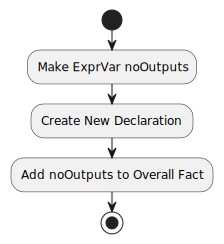

Class Alloy
- java.lang.Object
-
- edu.gatech.gtri.obm.translator.alloy.Alloy
-
public class Alloy extends Object
The Class Alloy.
-
-
Field Summary
Fields Modifier and Type Field Description static edu.mit.csail.sdg.ast.FunchappensBeforeThe happens before.static edu.mit.csail.sdg.ast.FunchappensDuringThe happens during.static edu.mit.csail.sdg.ast.FuncisAfterSourceThe is after source.static edu.mit.csail.sdg.ast.FuncisBeforeTargetThe is before target.static edu.mit.csail.sdg.ast.FuncoinputsThe oinputs.static edu.mit.csail.sdg.ast.FuncoitemsThe oitems.static edu.mit.csail.sdg.ast.FuncooutputsThe ooutputs.static edu.mit.csail.sdg.ast.FuncsourcesThe sources.static edu.mit.csail.sdg.ast.FuncsubsettingItemRuleForSourcesThe subsetting item rule for sources.static edu.mit.csail.sdg.ast.FuncsubsettingItemRuleForTargetsThe subsetting item rule for targets.static edu.mit.csail.sdg.ast.FunctargetsThe targets.static edu.mit.csail.sdg.ast.SigtransferBeforeSigThe transfer before sig.static edu.mit.csail.sdg.ast.ModuletransferModuleThe transfer module.static edu.mit.csail.sdg.ast.SigtransferSigThe transfer sig.
-
Method Summary
All Methods Instance Methods Concrete Methods Modifier and Type Method Description voidaddCardinalityEqualConstraintToField(edu.mit.csail.sdg.ast.Sig ownerSig, edu.mit.csail.sdg.ast.Sig.Field field, int num)Adds the cardinality equal constraint to field.voidaddCardinalityGreaterThanEqualConstraintToField(edu.mit.csail.sdg.ast.Sig ownerSig, edu.mit.csail.sdg.ast.Sig.Field field, int num)Adds the cardinality greater than equal constraint to field.voidaddEqual(edu.mit.csail.sdg.ast.Sig ownerSig, edu.mit.csail.sdg.ast.Sig.Field field1, edu.mit.csail.sdg.ast.Sig.Field field2)Adds the equal.voidaddEqual2(edu.mit.csail.sdg.ast.Sig.PrimSig ownerSig, List<edu.mit.csail.sdg.ast.Sig.Field> sortedFields, edu.mit.csail.sdg.ast.Func func)Adds the equal 2.voidaddFacts(edu.mit.csail.sdg.ast.Sig ownerSig, Set<edu.mit.csail.sdg.ast.Expr> facts)Adds the facts.voidaddOneConstraintToField(edu.mit.csail.sdg.ast.ExprVar var, edu.mit.csail.sdg.ast.Sig ownerSig, edu.mit.csail.sdg.ast.Sig.Field field)Adds the one constraint to field.voidaddRedefinedSubsettingAsFact(edu.mit.csail.sdg.ast.Sig sig, edu.mit.csail.sdg.ast.Sig.Field field, edu.mit.csail.sdg.ast.Sig typeSig)Adds the redefined subsetting as fact.voidaddSteps(edu.mit.csail.sdg.ast.Sig.PrimSig sig, Set<String> stepFields, boolean addInXSteps, boolean addXStepsIn)Adds the steps.voidaddToOverallFact(edu.mit.csail.sdg.ast.Expr expr)Adds the to overall fact.voidcreateBijectionFilteredHappensBeforeAndAddToOverallFact(edu.mit.csail.sdg.ast.ExprVar varX, edu.mit.csail.sdg.ast.Sig ownerSig, edu.mit.csail.sdg.ast.Expr from, edu.mit.csail.sdg.ast.Expr to)Creates the bijection filtered happens before and add to overall fact.Set<edu.mit.csail.sdg.ast.Expr>createBijectionFilteredToOverallFact(edu.mit.csail.sdg.ast.Sig ownerSig, edu.mit.csail.sdg.ast.Expr from, edu.mit.csail.sdg.ast.Expr to, edu.mit.csail.sdg.ast.Func func)Creates the function filtered and add to overall fact.voidcreateEqualFieldToOverallFact(edu.mit.csail.sdg.ast.Sig sig, edu.mit.csail.sdg.ast.Expr from, edu.mit.csail.sdg.ast.Sig.Field fromField, edu.mit.csail.sdg.ast.Expr to, edu.mit.csail.sdg.ast.Sig.Field toField, edu.mit.csail.sdg.ast.Func func)Creates the equal field to overall fact.voidcreateFunctionFilteredHappensBeforeAndAddToOverallFact(edu.mit.csail.sdg.ast.Sig ownerSig, edu.mit.csail.sdg.ast.Expr[] from, edu.mit.csail.sdg.ast.Expr[] to)Creates a functionFiltered fact with happensBefore.voidcreateFunctionFilteredHappensBeforeAndAddToOverallFact(edu.mit.csail.sdg.ast.Sig ownerSig, edu.mit.csail.sdg.ast.Expr from, edu.mit.csail.sdg.ast.Expr to)Creates a functionFiltered fact.voidcreateInOutClosure(edu.mit.csail.sdg.ast.Sig.PrimSig ownerSig, edu.mit.csail.sdg.ast.Sig.Field fieldOwner, List<edu.mit.csail.sdg.ast.Sig.Field> fieldOfFields, edu.mit.csail.sdg.ast.Func inOrOut)Creates the in out closure.voidcreateInverseFunctionFilteredHappensBeforeAndAddToOverallFact(edu.mit.csail.sdg.ast.Sig ownerSig, edu.mit.csail.sdg.ast.Expr[] from, edu.mit.csail.sdg.ast.Expr[] to)Creates a inverseFunctionFiltered fact with happensBefore.voidcreateInverseFunctionFilteredHappensBeforeAndAddToOverallFact(edu.mit.csail.sdg.ast.Sig ownerSig, edu.mit.csail.sdg.ast.Expr from, edu.mit.csail.sdg.ast.Expr to)Creates the inverse function filtered happens before and add to overall fact.Set<edu.mit.csail.sdg.ast.Expr>createIsAfterSourceIsBeforeTargetOverallFact(edu.mit.csail.sdg.ast.Sig ownerSig, edu.mit.csail.sdg.ast.Expr transfer)Creates the is after source is before target overall fact.voidcreateNoInputsOrOutputsField(edu.mit.csail.sdg.ast.Sig sig, edu.mit.csail.sdg.ast.Sig.Field field, edu.mit.csail.sdg.ast.Func inputsOrOutputs)Creates the no inputs or outputs field.edu.mit.csail.sdg.ast.Sig.PrimSigcreateSigAndAddToAllSigs(String label, edu.mit.csail.sdg.ast.Sig.PrimSig parent)Creates the sig and add to all sigs.edu.mit.csail.sdg.ast.Sig.PrimSigcreateSigAsChildOfOccSigAndAddToAllSigs(String label)Creates the sig as child of occ sig and add to all sigs.edu.mit.csail.sdg.ast.Sig.PrimSigcreateSigAsChildOfParentSigAddToAllSigs(String label, edu.mit.csail.sdg.ast.Sig.PrimSig parentSig)Creates the sig as child of parent sig add to all sigs.Set<edu.mit.csail.sdg.ast.Expr>createSubSettingItemRuleOverallFact(edu.mit.csail.sdg.ast.Sig ownerSig, edu.mit.csail.sdg.ast.Expr transfer)Creates the sub setting item rule overall fact.Set<edu.mit.csail.sdg.ast.Expr>createTransferInItems(edu.mit.csail.sdg.ast.Sig ownerSig, edu.mit.csail.sdg.ast.Expr transfer, edu.mit.csail.sdg.ast.Expr toField, edu.mit.csail.sdg.ast.Func func, Set<edu.mit.csail.sdg.ast.Sig.Field> targetInputsSourceOutputsFields, boolean toBeInherited)Creates the transfer in items.List<edu.mit.csail.sdg.ast.Sig>getAllSigs()Gets the all sigs.edu.mit.csail.sdg.ast.ExprgetCommonCmdExprs()Returns nonZeroDurationOnly and suppressTransfers and suppressIO.Set<edu.mit.csail.sdg.ast.Expr>getIgnoredExprs()Gets the ignored exprs.Set<edu.mit.csail.sdg.ast.Func>getIgnoredFuncs()Gets the ignored funcs.Set<edu.mit.csail.sdg.ast.Sig>getIgnoredSigs()Gets the ignored sigs.edu.mit.csail.sdg.ast.Sig.PrimSiggetOccSig()Gets the occ sig.edu.mit.csail.sdg.ast.ExprgetOverAllFact()Gets the over all fact.edu.mit.csail.sdg.ast.ModulegetTemplateModule()Gets the template module.edu.mit.csail.sdg.ast.ModulegetTransferModule()Gets the transfer module.voidnoInputsOrOutputsX(edu.mit.csail.sdg.ast.Sig sig, edu.mit.csail.sdg.ast.Func inputsOrOutpus)No inputs or outputs X.voidnoInputsXAndXInputsOrOutputsXAndXOutputs(edu.mit.csail.sdg.ast.Sig sig, edu.mit.csail.sdg.ast.Func inputsOrOutputs)No inputs X and X inputs or outputs X and X outputs.voidnoItemsX(edu.mit.csail.sdg.ast.Sig sig)No items X.voidnoStepsX(edu.mit.csail.sdg.ast.Sig sig)No steps X.voidnoTransferStep(edu.mit.csail.sdg.ast.Sig sig)Add expression like ...voidnoXInputsOrOutputs(edu.mit.csail.sdg.ast.Sig sig, edu.mit.csail.sdg.ast.Func inputsOrOutputs)No X inputs or outputs.voidnoXSteps(edu.mit.csail.sdg.ast.Sig sig)No X steps.
-
-
-
Field Detail
-
transferModule
public static edu.mit.csail.sdg.ast.Module transferModule
The transfer module.
-
happensBefore
public static edu.mit.csail.sdg.ast.Func happensBefore
The happens before.
-
happensDuring
public static edu.mit.csail.sdg.ast.Func happensDuring
The happens during.
-
sources
public static edu.mit.csail.sdg.ast.Func sources
The sources.
-
targets
public static edu.mit.csail.sdg.ast.Func targets
The targets.
-
subsettingItemRuleForSources
public static edu.mit.csail.sdg.ast.Func subsettingItemRuleForSources
The subsetting item rule for sources.
-
subsettingItemRuleForTargets
public static edu.mit.csail.sdg.ast.Func subsettingItemRuleForTargets
The subsetting item rule for targets.
-
isAfterSource
public static edu.mit.csail.sdg.ast.Func isAfterSource
The is after source.
-
isBeforeTarget
public static edu.mit.csail.sdg.ast.Func isBeforeTarget
The is before target.
-
oinputs
public static edu.mit.csail.sdg.ast.Func oinputs
The oinputs.
-
ooutputs
public static edu.mit.csail.sdg.ast.Func ooutputs
The ooutputs.
-
oitems
public static edu.mit.csail.sdg.ast.Func oitems
The oitems.
-
transferSig
public static edu.mit.csail.sdg.ast.Sig transferSig
The transfer sig.
-
transferBeforeSig
public static edu.mit.csail.sdg.ast.Sig transferBeforeSig
The transfer before sig.
-
-
Constructor Detail
-
Alloy
public Alloy(String working_dir)
Instantiates a new alloy.
- Parameters:
working_dir- where required alloy library defined in templateString is locating.
-
-
Method Detail
-
getTransferModule
public edu.mit.csail.sdg.ast.Module getTransferModule()
Gets the transfer module.- Returns:
- the transfer module
-
getTemplateModule
public edu.mit.csail.sdg.ast.Module getTemplateModule()
Gets the template module.- Returns:
- the template module
-
getOccSig
public edu.mit.csail.sdg.ast.Sig.PrimSig getOccSig()
Gets the occ sig.- Returns:
- the occ sig
-
getOverAllFact
public edu.mit.csail.sdg.ast.Expr getOverAllFact()
Gets the over all fact.- Returns:
- the over all fact
-
getAllSigs
public List<edu.mit.csail.sdg.ast.Sig> getAllSigs()
Gets the all sigs.- Returns:
- the all sigs
-
createSigAndAddToAllSigs
public edu.mit.csail.sdg.ast.Sig.PrimSig createSigAndAddToAllSigs(String label, edu.mit.csail.sdg.ast.Sig.PrimSig parent)
Creates the sig and add to all sigs.
- Parameters:
label- the labelparent- the parent- Returns:
- the prim sig
-
createSigAsChildOfOccSigAndAddToAllSigs
public edu.mit.csail.sdg.ast.Sig.PrimSig createSigAsChildOfOccSigAndAddToAllSigs(String label)
Creates the sig as child of occ sig and add to all sigs.
- Parameters:
label- the label- Returns:
- the prim sig
-
createSigAsChildOfParentSigAddToAllSigs
public edu.mit.csail.sdg.ast.Sig.PrimSig createSigAsChildOfParentSigAddToAllSigs(String label, edu.mit.csail.sdg.ast.Sig.PrimSig parentSig)
Creates the sig as child of parent sig add to all sigs.
- Parameters:
label- the labelparentSig- the parent sig- Returns:
- the prim sig
-
addToOverallFact
public void addToOverallFact(edu.mit.csail.sdg.ast.Expr expr)
Adds the to overall fact.
- Parameters:
expr- the expr
-
getIgnoredSigs
public Set<edu.mit.csail.sdg.ast.Sig> getIgnoredSigs()
Gets the ignored sigs.- Returns:
- the ignored sigs
-
getIgnoredExprs
public Set<edu.mit.csail.sdg.ast.Expr> getIgnoredExprs()
Gets the ignored exprs.- Returns:
- the ignored exprs
-
getIgnoredFuncs
public Set<edu.mit.csail.sdg.ast.Func> getIgnoredFuncs()
Gets the ignored funcs.- Returns:
- the ignored funcs
-
createInverseFunctionFilteredHappensBeforeAndAddToOverallFact
public void createInverseFunctionFilteredHappensBeforeAndAddToOverallFact(edu.mit.csail.sdg.ast.Sig ownerSig, edu.mit.csail.sdg.ast.Expr from, edu.mit.csail.sdg.ast.Expr to)Creates the inverse function filtered happens before and add to overall fact.
- Parameters:
ownerSig- the owner sigfrom- the fromto- the to
-
createInverseFunctionFilteredHappensBeforeAndAddToOverallFact
public void createInverseFunctionFilteredHappensBeforeAndAddToOverallFact(edu.mit.csail.sdg.ast.Sig ownerSig, edu.mit.csail.sdg.ast.Expr[] from, edu.mit.csail.sdg.ast.Expr[] to)Creates a inverseFunctionFiltered fact with happensBefore. Use when "from" or "to" has a + sign. fact f3 {all s: Loop | functionFiltered[happensBefore, s.p2, s.p2 + s.p3]} ownerSig=Loop; from={p2}; to={p2, p3}In this example, "to" has a + sign.

- Parameters:
ownerSig- the owner sigfrom- the fromto- the to
-
createFunctionFilteredHappensBeforeAndAddToOverallFact
public void createFunctionFilteredHappensBeforeAndAddToOverallFact(edu.mit.csail.sdg.ast.Sig ownerSig, edu.mit.csail.sdg.ast.Expr from, edu.mit.csail.sdg.ast.Expr to)Creates a functionFiltered fact. Example Alloy fact: fact f1 { all s: Loop | functionFiltered[happensBefore, s.p1, s.p2] } ownerSig = Loop, from = p1, to = p2This function doesn't handle the case where "from" or "to" has a plus sign in it. Example Alloy fact this function can't create: fact f3 {all s: Loop | functionFiltered[happensBefore, s.p2, s.p2 + s.p3]}
I wrote another function below to handle this case with + sign. createFunctionFilteredHappensBeforeAndAllToOverAllFact( Sig ownerSig, Expr[] from, Expr[] to)

- Parameters:
ownerSig- the owner sigfrom- the fromto- the to
-
createFunctionFilteredHappensBeforeAndAddToOverallFact
public void createFunctionFilteredHappensBeforeAndAddToOverallFact(edu.mit.csail.sdg.ast.Sig ownerSig, edu.mit.csail.sdg.ast.Expr[] from, edu.mit.csail.sdg.ast.Expr[] to)Creates a functionFiltered fact with happensBefore. Use when "from" or "to" has a + sign. fact f3 {all s: Loop | functionFiltered[happensBefore, s.p2, s.p2 + s.p3]} ownerSig=Loop; from={p2}; to={p2, p3}In this example, "to" has a + sign.

- Parameters:
ownerSig- the owner sigfrom- the fromto- the to
-
createSubSettingItemRuleOverallFact
public Set<edu.mit.csail.sdg.ast.Expr> createSubSettingItemRuleOverallFact(edu.mit.csail.sdg.ast.Sig ownerSig, edu.mit.csail.sdg.ast.Expr transfer)
Creates the sub setting item rule overall fact.
- Parameters:
ownerSig- the owner sigtransfer- the transfer- Returns:
- the sets the
-
createIsAfterSourceIsBeforeTargetOverallFact
public Set<edu.mit.csail.sdg.ast.Expr> createIsAfterSourceIsBeforeTargetOverallFact(edu.mit.csail.sdg.ast.Sig ownerSig, edu.mit.csail.sdg.ast.Expr transfer)
Creates the is after source is before target overall fact.
- Parameters:
ownerSig- the owner sigtransfer- the transfer- Returns:
- the sets the
-
addFacts
public void addFacts(edu.mit.csail.sdg.ast.Sig ownerSig, Set<edu.mit.csail.sdg.ast.Expr> facts)Adds the facts.- Parameters:
ownerSig- the owner sigfacts- the facts
-
createTransferInItems
public Set<edu.mit.csail.sdg.ast.Expr> createTransferInItems(edu.mit.csail.sdg.ast.Sig ownerSig, edu.mit.csail.sdg.ast.Expr transfer, edu.mit.csail.sdg.ast.Expr toField, edu.mit.csail.sdg.ast.Func func, Set<edu.mit.csail.sdg.ast.Sig.Field> targetInputsSourceOutputsFields, boolean toBeInherited)
Creates the transfer in items.- Parameters:
ownerSig- the owner sigtransfer- the transfertoField- the to fieldfunc- the functargetInputsSourceOutputsFields- the target inputs source outputs fieldstoBeInherited- the to be inherited- Returns:
- the sets the
-
createBijectionFilteredToOverallFact
public Set<edu.mit.csail.sdg.ast.Expr> createBijectionFilteredToOverallFact(edu.mit.csail.sdg.ast.Sig ownerSig, edu.mit.csail.sdg.ast.Expr from, edu.mit.csail.sdg.ast.Expr to, edu.mit.csail.sdg.ast.Func func)
Creates the function filtered and add to overall fact.
- Parameters:
ownerSig- the owner sigfrom- the fromto- the tofunc- the func- Returns:
- the sets the
-
createBijectionFilteredHappensBeforeAndAddToOverallFact
public void createBijectionFilteredHappensBeforeAndAddToOverallFact(edu.mit.csail.sdg.ast.ExprVar varX, edu.mit.csail.sdg.ast.Sig ownerSig, edu.mit.csail.sdg.ast.Expr from, edu.mit.csail.sdg.ast.Expr to)Creates the bijection filtered happens before and add to overall fact.
- Parameters:
varX- the var XownerSig- the owner sigfrom- the fromto- the to
-
getCommonCmdExprs
public edu.mit.csail.sdg.ast.Expr getCommonCmdExprs()
Returns nonZeroDurationOnly and suppressTransfers and suppressIO.
- Returns:
- nonZeroDurationOnly and suppressTransfers and suppressIO
-
addCardinalityEqualConstraintToField
public void addCardinalityEqualConstraintToField(edu.mit.csail.sdg.ast.Sig ownerSig, edu.mit.csail.sdg.ast.Sig.Field field, int num)Adds the cardinality equal constraint to field.
- Parameters:
ownerSig- the owner sigfield- the fieldnum- the num
-
addCardinalityGreaterThanEqualConstraintToField
public void addCardinalityGreaterThanEqualConstraintToField(edu.mit.csail.sdg.ast.Sig ownerSig, edu.mit.csail.sdg.ast.Sig.Field field, int num)Adds the cardinality greater than equal constraint to field.
- Parameters:
ownerSig- the owner sigfield- the fieldnum- the num
-
addEqual
public void addEqual(edu.mit.csail.sdg.ast.Sig ownerSig, edu.mit.csail.sdg.ast.Sig.Field field1, edu.mit.csail.sdg.ast.Sig.Field field2)Adds the equal.
- Parameters:
ownerSig- the owner sigfield1- the field 1field2- the field 2
-
addEqual2
public void addEqual2(edu.mit.csail.sdg.ast.Sig.PrimSig ownerSig, List<edu.mit.csail.sdg.ast.Sig.Field> sortedFields, edu.mit.csail.sdg.ast.Func func)Adds the equal 2.- Parameters:
ownerSig- the owner sigsortedFields- the sorted fieldsfunc- the func
-
createInOutClosure
public void createInOutClosure(edu.mit.csail.sdg.ast.Sig.PrimSig ownerSig, edu.mit.csail.sdg.ast.Sig.Field fieldOwner, List<edu.mit.csail.sdg.ast.Sig.Field> fieldOfFields, edu.mit.csail.sdg.ast.Func inOrOut)Creates the in out closure.- Parameters:
ownerSig- the owner sigfieldOwner- the field ownerfieldOfFields- the field of fieldsinOrOut- the in or out
-
addOneConstraintToField
public void addOneConstraintToField(edu.mit.csail.sdg.ast.ExprVar var, edu.mit.csail.sdg.ast.Sig ownerSig, edu.mit.csail.sdg.ast.Sig.Field field)Adds the one constraint to field.
- Parameters:
var- the varownerSig- the owner sigfield- the field
-
noStepsX
public void noStepsX(edu.mit.csail.sdg.ast.Sig sig)
No steps X.
- Parameters:
sig- the sig
-
noXSteps
public void noXSteps(edu.mit.csail.sdg.ast.Sig sig)
No X steps.
- Parameters:
sig- the sig
-
noInputsOrOutputsX
public void noInputsOrOutputsX(edu.mit.csail.sdg.ast.Sig sig, edu.mit.csail.sdg.ast.Func inputsOrOutpus)No inputs or outputs X.- Parameters:
sig- the siginputsOrOutpus- the inputs or outpus
-
noXInputsOrOutputs
public void noXInputsOrOutputs(edu.mit.csail.sdg.ast.Sig sig, edu.mit.csail.sdg.ast.Func inputsOrOutputs)No X inputs or outputs.- Parameters:
sig- the siginputsOrOutputs- the inputs or outputs
-
noInputsXAndXInputsOrOutputsXAndXOutputs
public void noInputsXAndXInputsOrOutputsXAndXOutputs(edu.mit.csail.sdg.ast.Sig sig, edu.mit.csail.sdg.ast.Func inputsOrOutputs)No inputs X and X inputs or outputs X and X outputs.- Parameters:
sig- the siginputsOrOutputs- the inputs or outputs
-
noItemsX
public void noItemsX(edu.mit.csail.sdg.ast.Sig sig)
No items X.- Parameters:
sig- the sig
-
createNoInputsOrOutputsField
public void createNoInputsOrOutputsField(edu.mit.csail.sdg.ast.Sig sig, edu.mit.csail.sdg.ast.Sig.Field field, edu.mit.csail.sdg.ast.Func inputsOrOutputs)Creates the no inputs or outputs field.- Parameters:
sig- the sigfield- the fieldinputsOrOutputs- the inputs or outputs
-
createEqualFieldToOverallFact
public void createEqualFieldToOverallFact(edu.mit.csail.sdg.ast.Sig sig, edu.mit.csail.sdg.ast.Expr from, edu.mit.csail.sdg.ast.Sig.Field fromField, edu.mit.csail.sdg.ast.Expr to, edu.mit.csail.sdg.ast.Sig.Field toField, edu.mit.csail.sdg.ast.Func func)Creates the equal field to overall fact.- Parameters:
sig- the sigfrom- the fromfromField- the from fieldto- the totoField- the to fieldfunc- the func
-
noTransferStep
public void noTransferStep(edu.mit.csail.sdg.ast.Sig sig)
Add expression like ... fact {all x: SimpleSequence | no y: Transfer | y in x.steps}- Parameters:
sig- the sig
-
addSteps
public void addSteps(edu.mit.csail.sdg.ast.Sig.PrimSig sig, Set<String> stepFields, boolean addInXSteps, boolean addXStepsIn)Adds the steps.
- Parameters:
sig- the sigstepFields- the step fieldsaddInXSteps- the add in X stepsaddXStepsIn- the add X steps in
-
addRedefinedSubsettingAsFact
public void addRedefinedSubsettingAsFact(edu.mit.csail.sdg.ast.Sig sig, edu.mit.csail.sdg.ast.Sig.Field field, edu.mit.csail.sdg.ast.Sig typeSig)Adds the redefined subsetting as fact.- Parameters:
sig- the sigfield- the fieldtypeSig- the type sig
-
-